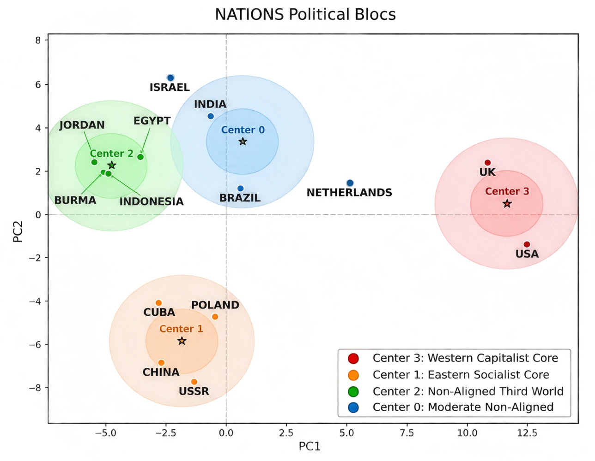

father_of+father_of→grandfather_of
A relation can be a route.
Compositions make multi-step patterns reusable. The example above illustrates the idea; below are composition patterns learned on Nations.

A brain-inspired architecture for
reasoning over structured knowledge.
What if the structure of a network
was the structure of its knowledge?
Paris is in France. France is in Europe. The connection tells us something no entity can tell us alone.
Embeddings encode these relationships in numerical representations. NSR asks: what if we keep the relational structure explicit in the network itself?
Follow the arrows: Paris → France → Europe. The path is right there.
A visual analogy, not an embedding algorithm. Vector models can encode relations implicitly; the distinction here is whether the relational topology remains directly inspectable.
Knowledge in the connections.
Reasoning in the activity.
Different kinds of knowledge get different neural populations. Inspired by complementary brain functions, these populations bind entities to relations and learn how relations fit together.

HIPPOCAMPUS → ENTITY POPULATION
A dedicated neuron represents each entity. Stable identities let the network refer to the same thing across different facts and queries.
The brain correspondences motivate the design. They are not a claim of biological equivalence.
See a triple become a circuit ↓A fact becomes a pattern of connections. Give NSR a head, a relation and a tail—then watch where each part belongs.
The head and tail each have an entity neuron. E–Z connections are already fixed: each entity connects to its own relation-indexed binding neurons.
CCompositions are learned across facts. Single-triple encoding leaves C unchanged.
Illustrative encoding, following §3.2 / Eq. 3. Highlights explain roles; they are not recorded activations. Encoding assigns weights directly—the animation reveals the construction in steps. Read the formulation ↗
A query sets the network in motion. Follow the activity from a relation, through an entity–relation binding, to a candidate answer.
These are five recorded states from the Nations model—the same data behind our prototype animation.
Loading the recorded activation data…
Recorded replay, not live inference. Three illustrative traces selected for a clear, correct top-1 readout; not an aggregate performance sample. Node activity comes from the model. Straight connections run between populations; curved connections stay within a population. The selected pathway is schematic. This E–R–Z example does not display composition-layer activity.
Local Hebbian updates strengthen relation associations and learn compositions, without backpropagation. The connections that learn are also the connections used to reason.
Compositions make multi-step patterns reusable. The example above illustrates the idea; below are composition patterns learned on Nations.

Learned relational representations organize Nations entities into concept-like groups associated with historical political blocs. These are patterns in this dataset, rather than supplied group labels.
Competitive link prediction, with a different learning process. NSR learns through local updates, without backpropagation. Explore the accuracy and reported training time together.
Source: NeurIPS author slides, slides 8–9. Training times use the reported hardware and protocols; ratios describe those runs, not a hardware-controlled speedup. The horizontal axis uses a logarithmic scale. Models without reported times remain in the table. * denotes a baseline value quoted from prior work.
4 min 28 sec · English · Subtitled · 1.1× original presentation speed
KEEP THE CONNECTIONS GOING
@misc{jia2026neuralstructuralreasoner,
title={Neural Structural Reasoner: A Brain-inspired Architecture
for Reasoning over Structured Knowledge},
author={Zixing Jia and Yuhang Pan and Ni Ji},
year={2026},
eprint={2609.36620},
archivePrefix={arXiv},
primaryClass={cs.AI},
url={https://arxiv.org/abs/2609.36620}
}